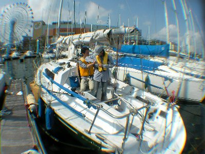
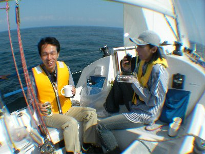

秋晴れにはヨット | 2009年10月 幹事：サムちゃん |
|---|---|
| 夏も終わり、秋に差し掛かる10月初旬の日曜、秋晴れの良いお天気になりました。 今回もサムちゃんのご協力のもと、ヨットで駿河湾に繰り出したのです！ 夏のヨット企画のときに、参加できなかった私のわがままを聞き入れてくれた日程、声掛けは少人数で行われ、参加できなかった皆さんには申し訳ないです。 さて、絶好のヨット日和と言いましょうか、暑くもなく寒くもないので、清水港も多くのヨットマンが活動中でした。優雅だな〜 まずは、準備。帆が畳んであったので、それを広げて、骨を入れます。 って、帆に骨が入っていたんですね〜 この骨は細い板で、前のほうが薄く、後ろにむかって厚くなっており、帆が風を受けるときれいなカーブが描くようになっています。（これで、説明有ってます？サムちゃん） | |
|  出航 |  ジブセールの調整（だったかな） |
| 今回は、サムちゃん、いづみさん、Kusaさんと私の4名で出港。10時位だったかな？ ヨットハーバーを出て帆（メインセール）を張るが、防波堤が障害なのか風が弱く、しばらくは微速前進。 防波堤を過ぎたあたりから、帆に風を受ける感じが強まり、速度も増してきました。 前の帆（ジブセール）も張って、速度UP！ 今日は南からの風が有りますね。 ここらで、カンパ〜イ！ 今回はキリン「FREE」（アルコール０％）での乾杯でした。ビール飲みたいけど、帰り車だしね。 風を受け、波をけり、進路は気が向くまま東南東へ。途中、潮目があって、波の色が変わります。 波は穏やかで、風は心地よく、日が暖かい。太陽の光を受けて波間がキラキラ。う〜ん、平和だな〜 12時ぐらいにお昼。私のお昼は、行きにドリームプラザで買った海苔巻。洋上で食べる海苔巻旨いなー。 | |
|  お昼 |  マッタリモードです |
| 午後1時になった時点で折り返します。 折り返すということは、風を受ける面が変わるので、帆も若干動かします。前の帆（ジブセール）は、左から右のようにマストを挟んで動きます。船だって今まで左に傾いていたのが、右になったりするわけです。 お昼ぐらいから、風が増してきて速度は上々。船も大きく傾き、ヨットだーー！って感じで気持ちいい。 三保沖まで戻ったら、そこから北上。 そしたら、風が後ろから吹いてくるわけで、風と一緒に移動していることになるのだけど、風と一緒と言うことは、風を感じない（風の移動を感じられない）って事で、進んでいるんだけど、進んでいないみたい。 風が止んだみたいで暑いしね。 波をきってる様子はあるし、景色も動いているから進んでいるんだけどな〜 三保の海岸は釣り人で一杯。投げ釣りの浮きを引っ掻けないように、慎重にコース取り。 今回も無事に帰港出来ました。天気が良い時期は、ヨット最高ですね。サムちゃんありがとう〜 | |
 |  |
| 今回は、広角でないデジカメに、ワイコンレンズを無理矢理装着して撮影してみました。やはり、無理矢理なせいか、周辺がボケボケです。調整でどうにかなるのか？ どだい無理だったか？ もうちょっと研究が必要なようですね。チャレンジ、チャレンジ！ | |
| 写真＆コメント ｂｙ べっしー | |